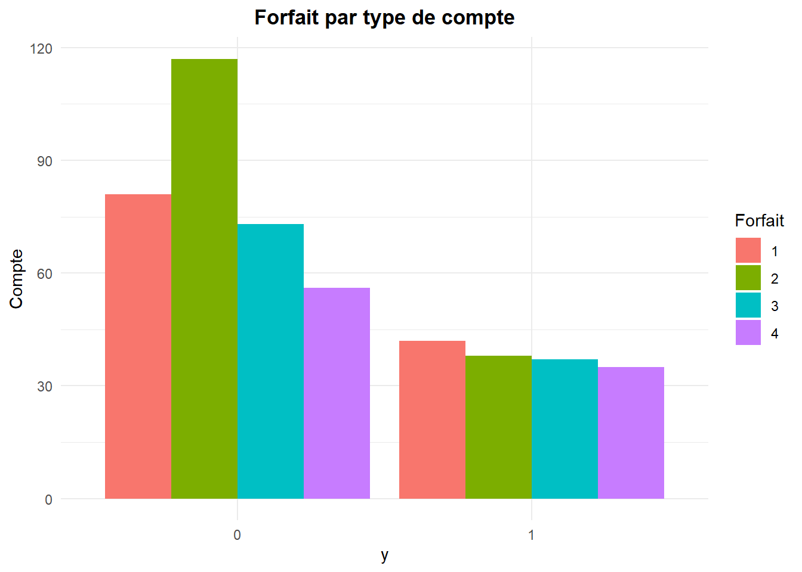

| Nom_Variable | Description |
|---|---|
| Y | Le client a quitté à la fin de son contrat (0 = non, 1 = oui) |
| Sexe | Sexe du répondant (0 = Homme, 1 = Femme) |
| Age | Âge en années du client |
| Revenu | Revenu en 4 catégories : 1 = (0\(, 20 000\)), 2 = (20 000\(, 50 000\)), 3 = (50 000\(, 80 000\)), 4 = (80 000$, ∞) |
| Minutes | Nombre moyen de minutes d’utilisation du téléphone par mois |
| Facture | Solde moyen du client (montant de la facture) |
| Forfait | Type de forfait utilisé par le client vers la fin de son contrat (valeurs possibles : 1, 2, 3 ou 4) |
Thème 6: La régréssion logistique
0.1 Introduction
La régression logistique est la méthode d’apprentissage la plus populaire après la régression linéaire.
En régression linéaire la variable dépendante (Y) doit être quantitative.
En régression logistique la variable réponse (Y) ne prend que deux valeurs. Elle est dans ce cas codée sous forme d’une variable binaire(Y=0 ou 1).
Exemples
Un client répond favorablement à une offre promotionnelle (oui ou non).
Un client décide de renouveler son contrat de téléphone cellulaire.
Une entreprise fait faillite.
Un client fait défaut de paiement du crédit hypothécaire.
Un employé quitte la compagnie.
Un internaute achète un produit en ligne…
0.2 Objectif
On dispose d’une variable binaire Y (prend 1 en cas d’occurrence de l’évènement et 0 si non occurrence) et d’un ensemble de p prédicteurs X (qualitatifs ou quantitatifs).
Les buts de la régression logistique sont essentiellement les mêmes que la régression linéaire:
Comprendre comment les variables indépendantes influencent la variable dépendante Y: modèle explicatif du comportement de Y.
Prévoir des valeurs de Y futures à partir des variables indépendantes: modèle prédictif.
0.3 Pourquoi la régression linéaire ne marche plus?
Le modèle de régression linéaire a la forme suivante:
\[ E[Y] = \beta_0 + \beta_1 X_1 + \beta_2 X_2 + \dots + \beta_p X_p \quad \text{où } E[Y] \text{ représente l’espérance (ou la valeur attendue).} \]
Quand Y est binaire, nous pouvons montrer que l’espérance de la variable binaire est en fait la probabilité que Y=1.
Le modèle de régression linéaire utilisé avec une variable binaire devient donc :
\[ P(Y = 1) = \cancel{\beta_0 + \beta_1 X_1 + \beta_2 X_2 + \dots + \beta_p X_p} \]
Probl√®me : le c√¥t√© gauche (P[Y=1]) de ce mod√®le prend des valeurs entre 0 et 1 tandis que le c√¥t√© droit peut prendre n‚Äôimporte quelle valeur entre (‚àí‚àû ùëíùë° + ‚àû). Ce mod√®le est donc inad√©quat et pourrait mener √† des pr√©dictions bizarres. Par exemple, le mod√®le pourrait dire que la probabilit√© que le client quitte est -0.3 ! Or une probabilit√© est toujours positive!
0.4 La solution au problème
Solution: Pour éviter que les résultats ne fassent pas du sens, on va transformer le côté gauche du modèle afin que les deux côtés puissent prendre les mêmes valeurs
Cet objectif est atteint si on utilise le logit(p): \[ \log \left( \frac{P(Y=1)}{P(Y=0)} \right) = \beta_0 + \beta_1 X_1 + \beta_2 X_2 + \dots + \beta_p X_p \]
Ce modèle est équivalent à
\[ \frac{P(Y=1)}{P(Y=0)} = e^{\beta_0 + \beta_1 X_1 + \beta_2 X_2 + \dots + \beta_p X_p} \quad \text{où } \frac{P(Y=1)}{P(Y=0)} \text{ est un odds (une cote).} \]
La régression logistique est donc basée sur ce modèle au lieu du modèle de régression linéaire.
Un odds ou une cote de 4 veut dire que P[ Y=1] est 4 fois plus grande que P[ Y=0] (donc que P[Y=1]=0.8).
Cote= 2
\[ \frac{P(Y=1)}{P(Y=0)} = 2 \implies P(Y=1) = 2 \times P(Y=0) = 2 \times (1 - P(Y=1)) \]
\[ \Rightarrow P(Y=1) = 0.667 \]
0.5 Complexité du modèle
Le modèle de régression logistique est plus complexe que le modèle de régression linéaire pour les raisons suivantes:
L’algorithme pour estimer les paramètres est plus complexe. Cela peut amener des problèmes de convergence ou des messages d’erreur.
Les coefficients sont plus difficiles à interpréter.
La prévision est délicate (on doit déterminer un point de coupure).
On abordera tous ces points ultérieurement.
0.6 Mise en situation 1
Une compagnie de téléphonie cellulaire cherche à déterminer les facteurs qui augmentent le risque de non renouvellement du contrat des clients.
Le fichier Télécommunication.csv contient 479 observations.
# Définir le répertoire de travail
setwd("C:/Users/Fatou/OneDrive - HEC Montréal/PROJET SUPERVISE/Data")
# Importer le jeu de données
telecom<-read.csv("Télécommunication.csv",sep=";", header=TRUE
)
# Transformer les variables catégorielles en facteur
telecom$y <- as.factor(telecom$y)
telecom$Sexe <- as.factor(telecom$Sexe)
telecom$Revenu <- as.factor(telecom$Revenu)
telecom$Forfait <- as.factor(telecom$Forfait)
# Convertir Facture en numérique
telecom$Facture <- as.numeric(gsub(",", ".", telecom$Facture))0.7 Quelques statistiques descriptives
# Calcul des fréquences de la variable Y
freq_y <- table(telecom$y)
# Calcul des pourcentages
pourcentage <- prop.table(freq_y) * 100
pourcentage_cumule <- cumsum(pourcentage)
# Créer un data frame récapitulatif
tableau_resume_y <- data.frame(
y = c(names(freq_y), "Total"),
Fréquence = c(freq_y, sum(freq_y)),
Pourcentage = c(round(pourcentage, 1), 100.0),
Pourcentage_cumulé = c(round(pourcentage, 1), NA)
)
# Afficher le tableau
tableau_resume_y y Fréquence Pourcentage Pourcentage_cumulé
0 0 327 68.3 68.3
1 1 152 31.7 31.7
Total 479 100.0 NATableau croisé y*Sexe
# Calcul des fréquences de Y par Sexe
tableau_y_sexe <- table(telecom$y, telecom$Sexe)
# Calcul des pourcentages de Y par Sexe (par colonne)
pourcentage_sexe_y <- prop.table(tableau_y_sexe, margin = 2) * 100
# Conversion en data frames
y_sexe_freq <- as.data.frame(tableau_y_sexe)
y_sexe_pourcentage <- as.data.frame(pourcentage_sexe_y)
# Renommer les colonnes
colnames(y_sexe_freq) <- c("y", "Sexe", "Fréquence")
colnames(y_sexe_pourcentage) <- c("y", "Sexe", "Pourcentage")
# Fusionner les deux tableaux sur y et Sexe
tableau_final_y_sexe <- merge(y_sexe_freq, y_sexe_pourcentage, by = c("y", "Sexe"))
# Afficher le tableau final
tableau_final_y_sexe y Sexe Fréquence Pourcentage
1 0 0 203 70.48611
2 0 1 124 64.92147
3 1 0 85 29.51389
4 1 1 67 35.07853# Charger le package dplyr
library(dplyr)
# Statistiques descriptives de Minutes par modalité de Y
stat_descriptive_minutes <- telecom %>%
group_by(y) %>%
summarise(
N = n(),
Moyenne = round(mean(Minutes, na.rm = TRUE), 2),
Mediane = round(median(Minutes, na.rm = TRUE), 2),
Ecart_type = round(sd(Minutes, na.rm = TRUE), 3),
Minimum = min(Minutes, na.rm = TRUE),
Maximum = max(Minutes, na.rm = TRUE)
)
# Afficher le tableau de résultats
stat_descriptive_minutes# A tibble: 2 × 7
y N Moyenne Mediane Ecart_type Minimum Maximum
<fct> <int> <dbl> <dbl> <dbl> <int> <int>
1 0 327 281. 244 153. 13 588
2 1 152 338. 284 164. 98 601Dans l’échantillon observé, 31.7% (152/479) des clients n’ont pas renouvelé leur contrat comparativement à 68.3% l’ayant fait.
35.1% des femmes dans l’échantillon (femmes) ont quitté la compagnie comparativement à 29.5% chez les hommes.
Le nombre de minutes moyen chez ceux qui n’ont pas renouvelé le contrat s’élève à 338.48 minutes comparativement à 281.31 chez ceux qui n’ont pas quitté.
Tableau croisé y*Forfait
# Calcul des fréquences de Y par Forfait
tableau_y_forfait <- table(telecom$y, telecom$Forfait)
# Calcul des pourcentages de Y par Forfait
pourcentage_forfait_y <- prop.table(tableau_y_forfait, margin = 2) * 100
# Conversion des tableaux en data frames
y_forfait_freq <- as.data.frame(tableau_y_forfait)
y_forfait_pourcentage <- as.data.frame(pourcentage_forfait_y)
# Renommer les colonnes
colnames(y_forfait_freq) <- c("y", "Forfait", "Fréquence")
colnames(y_forfait_pourcentage) <- c("y", "Forfait", "Pourcentage")
# Fusionner les deux tableaux sur y et Forfait
tableau_final_y_forfait <- merge(y_forfait_freq, y_forfait_pourcentage, by = c("y", "Forfait"))
# Afficher le tableau final
tableau_final_y_forfait y Forfait Fréquence Pourcentage
1 0 1 81 65.85366
2 0 2 117 75.48387
3 0 3 73 66.36364
4 0 4 56 61.53846
5 1 1 42 34.14634
6 1 2 38 24.51613
7 1 3 37 33.63636
8 1 4 35 38.46154# Charger le package ggplot2
library(ggplot2)
# Barplot de Y selon les types de Forfait
ggplot(data = telecom, aes(x = y, fill = Forfait)) +
geom_bar(position = "dodge") +
labs(
title = "Bar Chart",
x = "y",
y = "Compte",
fill = "Forfait"
) +
theme_minimal() 
# Calcul des statistiques descriptives de Facture par modalité de Y
stat_descriptive_facture <- telecom %>%
group_by(y) %>%
summarise(
N = n(),
Moyenne = round(mean(Facture, na.rm = TRUE), 2),
Mediane = round(median(Facture, na.rm = TRUE), 2),
Ecart_type = round(sd(Facture, na.rm = TRUE), 3),
Minimum = min(Facture, na.rm = TRUE),
Maximum = max(Facture, na.rm = TRUE)
)
# Afficher le tableau de résultats
stat_descriptive_facture# A tibble: 2 × 7
y N Moyenne Mediane Ecart_type Minimum Maximum
<fct> <int> <dbl> <dbl> <dbl> <dbl> <dbl>
1 0 327 58.9 56.7 28.5 10 140.
2 1 152 64.4 63.7 27.0 19.3 136 Une grande proportion (38.5%), parmi ceux qui détiennent le forfait 4, ne renouvellent pas le contrat.
La facture moyenne chez ceux qui n’ont pas renouvelé le contrat s’élève à 64.37$ comparativement à 58.88$ chez ceux qui n’ont pas quitté.
0.8 Régression logistique avec R
# Ajuster un modèle logistique en R avec la fonction glm et la famille binomiale
# reg_logistique <- glm(y ~ Variables_explicatives, data = data, family = binomial(link = "logit"))
# Résumé du modèle
# summary(reg_logistique)0.8.1 Attention: Identifiez les variables explicatives qualitatives!
Il ne faut pas oublier de convertir la variable y et les variables qualitatives en facteurs. En R, on utilise as.factor() pour cela. Nous l’avons déjà fait au début afin que la régression logistique interprète correctement les variables catégorielles. Assurez-vous d’effectuer cette transformation avant d’ajuster votre modèle pour que la catégorie de référence soit bien prise en compte.
0.9 Méthode d’estimation des paramètres
Rappel modèle: \[ \frac{P(Y=1)}{P(Y=0)} = e^{\beta_0 + \beta_1 X_1 + \beta_2 X_2 + \dots + \beta_p X_p} \]
Modèle théorique (population): \[ \log \left( \frac{P}{1 - P} \right) = \beta_0 + \beta_1 X_1 + \beta_2 X_2 + \dots + \beta_p X_p \]
Modèle ajusté (échantillon): \[ \log \left( \frac{P}{1 - P} \right) = b_0 + b_1 X_1 + b_2 X_2 + \dots + b_p X_p \]
Pour des valeurs de X₁, X₂, … Xₚ données, la probabilité estimée de l’occurrence de l’événement :
\[ \hat{p}(Y) = \frac{1}{1 + e^{-(b_0 + b_1 X_1 + b_2 X_2 + \dots + b_p X_p)}} \]
0.9.1 Le choix du point de coupure
Le modèle ajusté permet ainsi d’obtenir des prévisions de Y en spécifiant un point de coupure (seuil): \[ \hat{p} = \frac{1}{1 + e^{-(b_0 + b_1 X_1 + b_2 X_2 + \dots + b_p X_p)}} \]
Par défaut, R choisit un seuil de 0.5.
Ce point de coupure peut être changé si on n’accorde pas le même poids au fait de faussement classer un 0 ou de mal classer un 1
\[ \text{si } \hat{p} < 0.5 \text{ alors il est plus probable que } \hat{Y} = 0 \]
\[ \text{si } \hat{p} > 0.5 \text{ alors il est plus probable que } \hat{Y} = 1 \]
#Choisir un point de coupure manuellement
# Prédire les probabilités
#telecom$prob_pred <- predict(reg_logistique, type = "response")
#coupure <- 0.4 # Exemple on place le seuil à 40%
#telecom$y_pred_ <- ifelse(telecom$prob_pred > coupure, 1, 0)0.10 Méthode d’estimation des paramètres (suite)
Pour estimer les paramètres du modèle, la méthode la plus utilisée est celle du Maximum de vraisemblance ML. Cette méthode consiste à trouver les valeurs des paramètres qui rendent les données les plus probables possibles, c.à.d qui maximisent la vraisemblance.
On dérive de cette méthode une quantité (-2LL) qui traduit en quelque sorte la somme des carrés des résidus (SSE) en régression linéaire. Lorsqu’on ajoute une variable explicative au modèle, on s’attend à ce que le SSE diminue.
(-2LL) traduit donc la portion non expliquée du modèle.
On utilise règle générale la différence entre (-2LL) de deux modèles pour statuer sur la significativité de l’amélioration marginale apportée par l’ajout de variables (supplémentaires). C’est en quelque sorte équivalent à un test sur un sous ensemble de paramètres.
Si on ajuste des modèles hiérarchiques, on peut prouver que la quantité suivante:
\[ \text{Différence (ratio de vraisemblance)} = [-2\ell(\text{modèle réduit}) - (-2\ell(\text{modèle complet}))] = 2\ell(\text{modèle complet}) - 2\ell(\text{modèle réduit}) \sim \chi^2_{k_d} \quad \text{(à } k_d \text{ degrés de liberté)} \]
\[ k_d = (k_{\text{complet}} - k_{\text{réduit}}) \quad \text{où } k_i \text{ représente le nombre de paramètres dans un modèle } i. \]
\[ k_{\text{complet}} > k_{\text{réduit}} \]
0.11 Modèle 1: cas d’une variable explicative qualitative « Sexe »
\[ \log \left( \frac{p}{1 - p} \right) = \beta_0 + \beta_1 \times \text{Sexe} \]
Ajustons un modèle de régression logistique en utilisant uniquement la variable explicative Sexe
# Ajuster une régression logistique sans variable explicative
modele_simple <- glm(y ~ 1, data = telecom, family = binomial(link = "logit"))
# Ajuster une régression logistique avec Sexe comme seule variable explicative
modele_sexe <- glm(y ~ Sexe, data = telecom, family = binomial(link = "logit"))
# Résumé des deux modèles
summary(modele_simple)
Call:
glm(formula = y ~ 1, family = binomial(link = "logit"), data = telecom)
Coefficients:
Estimate Std. Error z value Pr(>|z|)
(Intercept) -0.76608 0.09817 -7.804 6.01e-15 ***
---
Signif. codes: 0 '***' 0.001 '**' 0.01 '*' 0.05 '.' 0.1 ' ' 1
(Dispersion parameter for binomial family taken to be 1)
Null deviance: 598.6 on 478 degrees of freedom
Residual deviance: 598.6 on 478 degrees of freedom
AIC: 600.6
Number of Fisher Scoring iterations: 4summary(modele_sexe)
Call:
glm(formula = y ~ Sexe, family = binomial(link = "logit"), data = telecom)
Coefficients:
Estimate Std. Error z value Pr(>|z|)
(Intercept) -0.8706 0.1292 -6.738 1.6e-11 ***
Sexe1 0.2550 0.1992 1.280 0.201
---
Signif. codes: 0 '***' 0.001 '**' 0.01 '*' 0.05 '.' 0.1 ' ' 1
(Dispersion parameter for binomial family taken to be 1)
Null deviance: 598.60 on 478 degrees of freedom
Residual deviance: 596.96 on 477 degrees of freedom
AIC: 600.96
Number of Fisher Scoring iterations: 40.11.1 Test du rapport de vraisemblance
H₀ : aucune amélioration d’ajustement suite à l’ajout de la variable Sexe
H₁ : la variable sexe contribue à l’amélioration de l’ajustement du modèle
# Test du rapport de vraisemblance entre les deux modèles
anova(modele_simple, modele_sexe, test = "Chisq")Analysis of Deviance Table
Model 1: y ~ 1
Model 2: y ~ Sexe
Resid. Df Resid. Dev Df Deviance Pr(>Chi)
1 478 598.60
2 477 596.96 1 1.6328 0.2013# Résumé du modèle avec la variable Sexe
summary(modele_sexe)
Call:
glm(formula = y ~ Sexe, family = binomial(link = "logit"), data = telecom)
Coefficients:
Estimate Std. Error z value Pr(>|z|)
(Intercept) -0.8706 0.1292 -6.738 1.6e-11 ***
Sexe1 0.2550 0.1992 1.280 0.201
---
Signif. codes: 0 '***' 0.001 '**' 0.01 '*' 0.05 '.' 0.1 ' ' 1
(Dispersion parameter for binomial family taken to be 1)
Null deviance: 598.60 on 478 degrees of freedom
Residual deviance: 596.96 on 477 degrees of freedom
AIC: 600.96
Number of Fisher Scoring iterations: 4\[ \begin{aligned} \text{Différence (ratio de vraisemblance)} &= [-2LL(\text{modèle réduit}) - (-2LL(\text{modèle complet}))] \\ &= 2LL(\text{modèle complet}) - 2LL(\text{modèle réduit}) \\ &\sim \chi^2_{k_d} \quad \text{où } k_d = k_{\text{complet}} - k_{\text{réduit}}, \\ &\text{et } k_i \text{ représente le nombre de paramètres dans un modèle } i. \\ &\text{(avec } k_{\text{complet}} > k_{\text{réduit}} \text{)} \end{aligned} \]
P=value = 0.201>5% donc au seuil 5%, on ne rejette pas H₀. l’ajout de la variable sexe n’améliore pas l’ajustement du modèle réduit.
0.11.2 La pseudo-performance du modèle
En régression logistique, nous n’avons pas de mesure de performance équivalente au coefficient de détermination R² de la régression linéaire.
Néanmoins, les valeurs de Cox& Snell R Square et Nagelkerke R Square donnent approximativement une indication sur la portion de la variation observée dans Y qui est expliquée par le modèle.
# Charger la librairie pscl
library(pscl)
# Calcul des pseudo R²
pR2(modele_sexe)fitting null model for pseudo-r2 llh llhNull G2 McFadden r2ML
-2.984814e+02 -2.992978e+02 1.632837e+00 2.727779e-03 3.403041e-03
r2CU
4.770154e-03 Les indices de Cox et Snell (0,003) et de Nagelkerke (0,005) indiquent que le modèle 1 explique entre 0,3 % et 0,5 % de la variabilité observée.
0.11.3 Test d’hypothèse pour un paramètre
\[ \begin{aligned} &H_0: \beta_{\text{constante}} = 0 \\ &H_1: \beta_{\text{constante}} \neq 0 \end{aligned} \]
P-value < 0.05. Au niveau 5%, on rejette H₀. la constante est statistiquement significative.
\[ \begin{aligned} &H_0: \beta_{\text{sexe}} = 0 \\ &H_1: \beta_{\text{sexe}} \neq 0 \end{aligned} \]
P-value=0.201 > 0.05 (même p-value page 20). Au niveau 5%, on ne rejette pas H₀. la variable n’est pas statistiquement significative
Les p-value de ces tests sont données dans ce tableau.
# Afficher les résultats détaillés du modèle avec la variable Sexe
summary(modele_sexe)
Call:
glm(formula = y ~ Sexe, family = binomial(link = "logit"), data = telecom)
Coefficients:
Estimate Std. Error z value Pr(>|z|)
(Intercept) -0.8706 0.1292 -6.738 1.6e-11 ***
Sexe1 0.2550 0.1992 1.280 0.201
---
Signif. codes: 0 '***' 0.001 '**' 0.01 '*' 0.05 '.' 0.1 ' ' 1
(Dispersion parameter for binomial family taken to be 1)
Null deviance: 598.60 on 478 degrees of freedom
Residual deviance: 596.96 on 477 degrees of freedom
AIC: 600.96
Number of Fisher Scoring iterations: 4R fournit une estimation du param√®tre ùõΩùë†ùëíùë•ùëí = 0.255.
Rappel: Modèle ajusté: \[ \hat{p}(Y) = \frac{1}{1 + e^{-(-0.871 + 0.255 \cdot Sexe)}} \]
0.11.4 D’où vient le odds ratio (rapport de cote)?
Rappel: Modèle ajusté: \[ \hat{p}(Y) = \frac{1}{1 + e^{-(-0.871 + 0.255 \cdot Sexe)}} \]
Calcul du rapport de cote (odds ratio) (à titre indicatif seulement)
| Sexe | Probabilité.de.ne.pas.renouveler.le.contrat | Probabilité.de.renouveler.le.contrat | Odds..Cote. |
|---|---|---|---|
| Femme | P(Y=1 | sexe=1) | P(Y=0 | sexe=1) | |
| Homme | P(Y=1 | sexe=0) | P(Y=0 | sexe=0) | |
| Rapport de cote d’une Femme vs un Homme | 1.29046162 |
\[ \textbf{Exemple de calcul:} \quad P(Y=1 | sexe=1) = \frac{1}{1 + e^{-(-0.871 + 0.255 \cdot 1)}} \quad \text{et} \quad P(Y=0 | sexe=1) = 1 - P(Y=1 | sexe=1) \]
\[ \textbf{Cote (pour femme)} = \frac{P(Y=1 | sexe = 1)}{P(Y=0 | sexe = 1)} = \frac{0.3507}{0.6493} = 0.5401 \]
\[ \textbf{Rapport de cote} = \frac{\text{cote femme}}{\text{cote homme}} = \frac{0.54}{0.41} = 1.29 \]
0.11.5 Interprétation du paramètre de la variable Sexe
\[ \text{Odds Ratio} = \frac{\text{odds après une augmentation d'une unité de la variable explicative}}{\text{odds de base}} = e^{\beta} \]
Interprétation
le risque d’interrompre le contrat est 1.29 fois plus élevé chez les femmes que chez les hommes. La cote des femmes est 1.29 *cote des hommes.
Le risque de non renouvellement est multiplié par 1.29 s’il s’agit d’une femme, ou bien, le risque de non renouvellement est augmenté de 29% s’il s’agit d’une femme.
Mais attention ce paramètre est statistiquement non significatif!
Si le rapport de cote (odds ratio) = 1; le fait d’interrompre le contrat est indépendant du sexe.
Si le rapport de cote(odds ratio) >1; le non renouvellement du contrat est plus fr√©quent chez les femmes (ùõΩùë†ùëíùë•ùëí > 0).Il y a une association positive entre X et P(y=1).
Si le rapport de cote (odds ratio) <1; le non renouvellement du contrat est plus fr√©quent chez les hommes(ùõΩùë†ùëíùë•ùëí < 0).Il y a une association n√©gative entre X et P(y=1).
Intervalle de confiance
IC (95%) : [0.873; 1.907] : 1 est une possibilité de l’intervalle ( on ne rejette pas H₀). La variable sexe ne contribue pas à expliquer significativement la probabilité de non renouvellement
0.12 Modèle 2: Cas d’une variable explicative quantitative «Minutes»
\[ \log \left( \frac{p}{1 - p} \right) = \beta_0 + \beta_1 \times \text{Minutes} \]
Ajustons un modèle de régression logistique en utilisant uniquement « Minutes » comme variable explicative
# Ajuster une régression logistique avec 'Minutes' comme variable explicative
modele_minutes <- glm(y ~ Minutes, data = telecom, family = binomial(link = "logit"))
# Afficher le résumé du modèle
summary(modele_minutes)
Call:
glm(formula = y ~ Minutes, family = binomial(link = "logit"),
data = telecom)
Coefficients:
Estimate Std. Error z value Pr(>|z|)
(Intercept) -1.471251 0.223351 -6.587 4.48e-11 ***
Minutes 0.002278 0.000626 3.639 0.000274 ***
---
Signif. codes: 0 '***' 0.001 '**' 0.01 '*' 0.05 '.' 0.1 ' ' 1
(Dispersion parameter for binomial family taken to be 1)
Null deviance: 598.60 on 478 degrees of freedom
Residual deviance: 585.13 on 477 degrees of freedom
AIC: 589.13
Number of Fisher Scoring iterations: 4# Effectuer le test du rapport de vraisemblance entre le modèle sans variable et le modèle avec 'Minutes'
anova(modele_simple, modele_minutes, test = "Chisq")Analysis of Deviance Table
Model 1: y ~ 1
Model 2: y ~ Minutes
Resid. Df Resid. Dev Df Deviance Pr(>Chi)
1 478 598.60
2 477 585.13 1 13.464 0.0002432 ***
---
Signif. codes: 0 '***' 0.001 '**' 0.01 '*' 0.05 '.' 0.1 ' ' 1# Calcul les pseudo R²
pR2(modele_minutes)fitting null model for pseudo-r2 llh llhNull G2 McFadden r2ML
-292.56579914 -299.29777111 13.46394393 0.02249256 0.02771708
r2CU
0.03885193 H₀: ùõΩ‚Çò·µ¢‚Çô·µ§‚Çú‚Çë‚Çõ= 0 vs H‚ÇÅ: ùõΩ‚Çò·µ¢‚Çô·µ§‚Çú‚Çë‚Çõ ‚↠0
P-value=0.00 on rejette H₀. La variable « Minutes » contribue à expliquer la probabilité d’occurrence de l’événement.
0.12.1 Interprétation du coefficient estimé de la variable «Minutes»
Interprétation
ùõΩ‚Çò·µ¢‚Çô·µ§‚Çú‚Çë‚Çõ = ùüé. ùüéùüéùüê; p-value <5%; il y a donc une association positive et significative entre le nombre moyen de minutes d‚Äôutilisation du t√©l√©phone en un mois et la probabilit√© de quitter.
Lorsque le nombre moyen de minutes par mois augmente de 1, le rapport de cote (odds ratio) est multipliée par e⁰.⁰⁰²=1.002
Lorsque le nombre moyen de minutes par mois augmente de 1, le rapport de cote augmente de 0.2% (1.002-1).
Si le nombre moyen de minutes par mois augmente de 1, le risque de ne pas renouveler le contrat augmente.
Intervalle de confiance (95%)
On estime au niveau de confiance 95% que le vrai rapport de cote dans la population se situe entre 1.001 et 1.004.
0.12.2 Test d’ajustement du modèle
Le test permet de tester l’ajustement du modèle aux données de l’échantillon. Hosmer-Lemeshow Goodness of Fit
#install.packages("ResourceSelection")
# Charger la bibliothèque pour le test de Hosmer-Lemeshow
library(ResourceSelection)
# Test de Hosmer-Lemeshow pour évaluer la qualité de l’ajustement du modèle
hoslem.test(modele_minutes$y, fitted(modele_minutes), g = 10)
Hosmer and Lemeshow goodness of fit (GOF) test
data: modele_minutes$y, fitted(modele_minutes)
X-squared = 32.084, df = 8, p-value = 8.997e-05Les hypothèses du test de Hosmer-Lemeshow Goodness of Fit sont les suivantes:
H₀: ùêøùëí ùëöùëúùëë√®ùëôùëí ùëéùëóùë¢ùë†ùë°ùëí ùëèùëñùëíùëõ ùëôùëíùë† ùëëùëúùëõùëõ√©ùëíùë† vs. H‚ÇÅ: ùëôùëí ùëöùëúùëë√®ùëôùëí ùëõ‚Ä≤ùëéùëóùë¢ùë†ùë°ùëí ùëùùëéùë† ùëèùëñùëíùëõ ùëôùëíùë† ùëëùëúùëõùëõ√©ùëíùë†
Si H₀ est vraie, la statistique HL (Hosmer-Lemshow) suit une Khi-deux à 8 degrés de liberté.
Comme la P-value=0 dans ce cas (Modèle avec Minutes seulement), on rejette H₀. Il n’y a donc pas assez d’évidence pour affirmer que le modèle ajuste bien les données.
Si le modèle n’est pas bon, on doit chercher à l’améliorer (exemple: rajouter d’autres variables au modèle).
0.12.3 L’idée du test d’ajustement Hosmer-Lemeshow (à titre indicatif)
Classer par ordre croissant les probabilités estimées.
Diviser l’échantillon en 10 groupes de tailles approximativement égales.
Calculer la somme des probabilités observées et celles estimées pour chaque groupe.
Calculer la statistique:
\[ \text{Khi-deux du test HL} = \sum_{i=1}^{10} \frac{n_i \cdot (\text{prob observée}_i - \text{prob estimée}_i)^2}{\text{prob estimée}_i \cdot (n_i - \text{prob estimée}_i)} \]
\[ HL = \frac{48 \times (5 - 10.425)^2}{10.425 \times (48 - 10.425)} + \dots + \frac{44 \times (26 - 19.753)^2}{19.753 \times (44 - 19.753)} = 29.107 \]
0.13 Modèle 3 : modèle avec toutes les variables explicatives
Forfait 1: catégorie de référence.
Revenu 1: catégorie de référence ((0$,20000$).
Homme: catégorie de référence.
# Ajuster une régression logistique avec toutes les variables explicatives
modele_complet <- glm(y ~ Sexe + Age + Revenu + Minutes + Facture + Forfait, data = telecom, family = binomial(link = "logit"))
# Afficher le résumé du modèle complet
summary(modele_complet)
Call:
glm(formula = y ~ Sexe + Age + Revenu + Minutes + Facture + Forfait,
family = binomial(link = "logit"), data = telecom)
Coefficients:
Estimate Std. Error z value Pr(>|z|)
(Intercept) -1.501746 0.555174 -2.705 0.00683 **
Sexe1 0.278993 0.217839 1.281 0.20029
Age -0.030816 0.007375 -4.178 2.94e-05 ***
Revenu2 0.167588 0.310278 0.540 0.58911
Revenu3 -0.487214 0.302354 -1.611 0.10709
Revenu4 -0.134965 0.294320 -0.459 0.64655
Minutes 0.011656 0.001887 6.175 6.60e-10 ***
Facture 0.012187 0.007244 1.682 0.09248 .
Forfait2 -1.495148 0.340324 -4.393 1.12e-05 ***
Forfait3 -4.376304 0.758593 -5.769 7.98e-09 ***
Forfait4 -4.237469 0.822642 -5.151 2.59e-07 ***
---
Signif. codes: 0 '***' 0.001 '**' 0.01 '*' 0.05 '.' 0.1 ' ' 1
(Dispersion parameter for binomial family taken to be 1)
Null deviance: 598.60 on 478 degrees of freedom
Residual deviance: 522.51 on 468 degrees of freedom
AIC: 544.51
Number of Fisher Scoring iterations: 4# Test du rapport de vraisemblance entre le modèle simple et le modèle complet
anova(modele_simple, modele_complet, test = "Chisq")Analysis of Deviance Table
Model 1: y ~ 1
Model 2: y ~ Sexe + Age + Revenu + Minutes + Facture + Forfait
Resid. Df Resid. Dev Df Deviance Pr(>Chi)
1 478 598.60
2 468 522.51 10 76.081 2.929e-12 ***
---
Signif. codes: 0 '***' 0.001 '**' 0.01 '*' 0.05 '.' 0.1 ' ' 1# Calcul des pseudo R²
pR2(modele_complet)fitting null model for pseudo-r2 llh llhNull G2 McFadden r2ML r2CU
-261.2571549 -299.2977711 76.0812325 0.1270996 0.1468616 0.2058607 # Test de Hosmer-Lemeshow pour évaluer l’ajustement du modèle complet
hoslem.test(modele_complet$y, fitted(modele_complet), g = 10)
Hosmer and Lemeshow goodness of fit (GOF) test
data: modele_complet$y, fitted(modele_complet)
X-squared = 11.115, df = 8, p-value = 0.1953Test de rapport de vraisemblance: p-value = 0<5%, Ce modèle est significatif pour expliquer Y.
pseudo-performance: Le modèle explique entre 14.7% à 20.6% de la variabilité observée.
Hosmer-Lemeshow: p-value=0.2 > 5%; on ne rejette pas H0. Il n’y a pas assez d’évidence pour affirmer que le modèle n’ajuste pas bien les données.
0.13.1 Interprétation des coefficients estimés
# Afficher le résumé détaillé du modèle complet
summary(modele_complet)
Call:
glm(formula = y ~ Sexe + Age + Revenu + Minutes + Facture + Forfait,
family = binomial(link = "logit"), data = telecom)
Coefficients:
Estimate Std. Error z value Pr(>|z|)
(Intercept) -1.501746 0.555174 -2.705 0.00683 **
Sexe1 0.278993 0.217839 1.281 0.20029
Age -0.030816 0.007375 -4.178 2.94e-05 ***
Revenu2 0.167588 0.310278 0.540 0.58911
Revenu3 -0.487214 0.302354 -1.611 0.10709
Revenu4 -0.134965 0.294320 -0.459 0.64655
Minutes 0.011656 0.001887 6.175 6.60e-10 ***
Facture 0.012187 0.007244 1.682 0.09248 .
Forfait2 -1.495148 0.340324 -4.393 1.12e-05 ***
Forfait3 -4.376304 0.758593 -5.769 7.98e-09 ***
Forfait4 -4.237469 0.822642 -5.151 2.59e-07 ***
---
Signif. codes: 0 '***' 0.001 '**' 0.01 '*' 0.05 '.' 0.1 ' ' 1
(Dispersion parameter for binomial family taken to be 1)
Null deviance: 598.60 on 478 degrees of freedom
Residual deviance: 522.51 on 468 degrees of freedom
AIC: 544.51
Number of Fisher Scoring iterations: 4Chaque coefficient estimé représente l’effet de la variable correspondante sur le Logit (y) une fois que les autres variables sont dans le modèle.
Âge (béta = -0.031): selon le modèle ajusté, pour chaque augmentation d’une année de l’âge, le rapport de côte (odds ratio) est multiplié par 0.970 (exp(-0.031)) toutes choses étant égales par ailleurs.
Alternativement: pour chaque augmentation de 1 an de l’âge, le rapport de côte diminue de 3% (1-0.970) TCEÉPA.
Minutes (béta =0.012): selon le modèle ajusté, si le nombre moyen de minutes par mois augmente de 1, le rapport de côte est multiplié par 1.012 TCEÉPA.
Alternativement: pour chaque augmentation de 1 du nombre de minutes moyen par mois, le rapport de côte augmente de 1.2% (1.012 -1) TCÉEPA.
La variable Revenu (introduite par le biais de 3 variables indicatrices) est non significative en présence de toutes les autres variables dans le modèle.
La variable Forfait est significative en présence de toutes les autres variables dans le modèle.
Forfait (1) (bêta=-1,495) :
Si tout demeure constant, on estime que les clients qui utilisent le forfait 2 voient leur rapport de côte multiplié par 0.224 (=exp(-1.495)) par rapport à ceux qui utilisent le forfait 1 (référence).
0.14 Table de classification
La table de classification renseigne sur la capacité du modèle à prédire correctement un état (le client quitte/ le client ne quitte pas). (le point de coupure choisi=0.5 )
La table nous permet de calculer le taux de bonne classification.
▪ Le taux de bonne classification= ùëÅùëúùëöùëèùëüùëí ùëë‚Ä≤ùëúùëèùë†ùëíùëüùë£ùëéùë°ùëñùëúùëõùë† ùëèùëñùëíùëõ ùëêùëôùëéùë†ùë†√©ùë† / ùë°ùëúùë°ùëéùëô = 287+54 /479 = 71.2%
▪ Le taux de mauvaise classification= (1- taux de bonne classification)= 100% -71.2%= 28.8%
# Générer les probabilités prédictives à partir du modèle complet
telecom$proba <- predict(modele_complet, type = "response")
# Générer les prédictions binaires (0 ou 1) avec un seuil de 0.5
telecom$prediction <- ifelse(telecom$proba > 0.5, 1, 0)
# Créer une table de classification
table_classification <- table(telecom$y, telecom$prediction)
table_classification
0 1
0 287 40
1 98 54# Calcul de la spécificité et de la sensibilité
Specificite <- 54 / (54 + 98) * 100 # Vrai négatif / (VN + FP)
Sensibilite <- 287 / (287 + 40) * 100 # Vrai positif / (VP + FN)
# Afficher les résultats
Specificite[1] 35.52632Sensibilite[1] 87.76758La proportion de vrais négatifs, appelée spécificité, est de 87.8%,
La proportion de vrais positifs, appelée sensibilité, est de 35.5%.
0.15 Mise en situation 2
Sur la base du fichier de données « faillite.csv », on se propose d’analyser, au moyen d’une régression logistique, la faillite et survie de firmes en fonction de quatre ratios financiers.
Variables
| Nom_Variable | Description |
|---|---|
| Y | 1 si faillite, 0 si survie |
| X1 | Flux de trésorerie / Dette totale |
| X2 | Résultat net / Actif |
| X3 | Actif à court terme / Dette à court terme |
| X4 | Actif à court terme / Ventes |
setwd("C:/Users/Fatou/OneDrive - HEC Montréal/PROJET SUPERVISE/Data")
faillite<-read.csv("faillite.csv",sep=";", header=TRUE)0.15.1 Questions
Ajustez un modèle de régression logistique simple de Y sur chaque variable explicative. Quelle est l’estimation de l’équation de la régression logistique obtenue? Interprétez les estimations obtenues en termes de « Odds ratio ». Ordonnez la performance de ces 4 modèles.
Effectuez une r√©gression logistique de Y sur tous les ratios financiers ùëø‚±º (mod√®le 1) Quelle est l‚Äôestimation de l‚Äô√©quation de la r√©gression logistique obtenue? Interpr√©tez les estimations obtenues en termes de ¬´ Odds ratio ¬ª.
Identifiez les variables significatives dans le modèle 1. Comparez avec les résultats en 1).
En utilisant un niveau de 5%, est-ce que la régression est globalement significative dans le modèle 1?
Avez-vous des réticences par rapport à l’une ou l’autre de vos interprétations du modèle 1? Si oui, expliquez ce phénomène.
Quelle proportion de la variation de la variable Y est expliquée par le modèle 1?
Que pouvez-vous dire sur l’ajustement du modèle 1?
Que pouvez-vous dire sur le pouvoir de discrimination du modèle 1?
Effectuez une procédure de sélection de variables pour obtenir le meilleur modèle de régression logistique.
Discutez le pouvoir discriminant du modèle retenu à la question précédente à l’aide de la table de classification